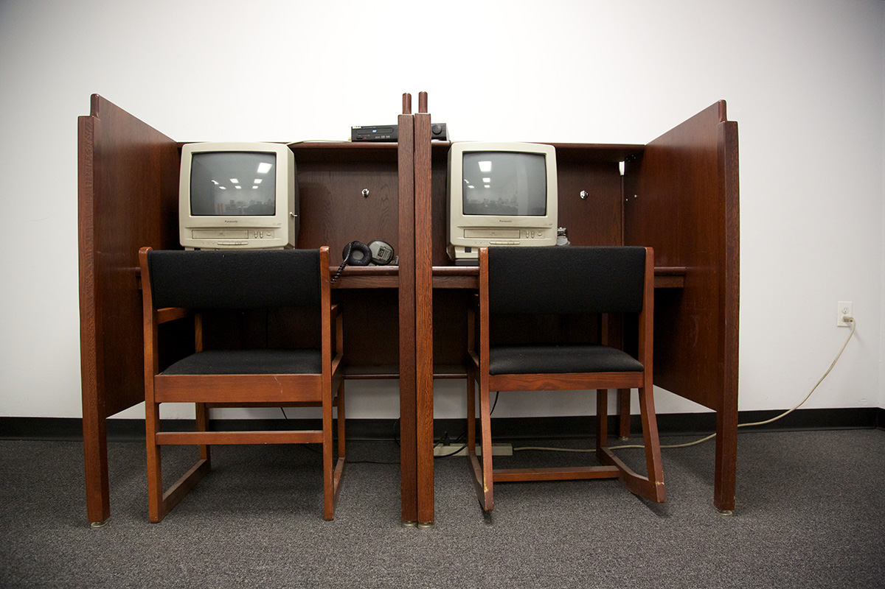
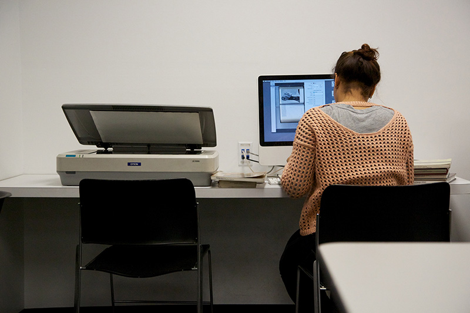
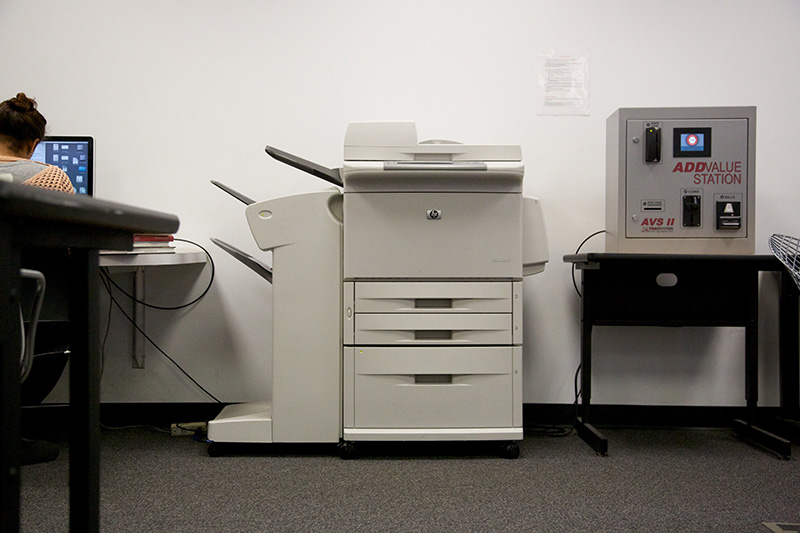
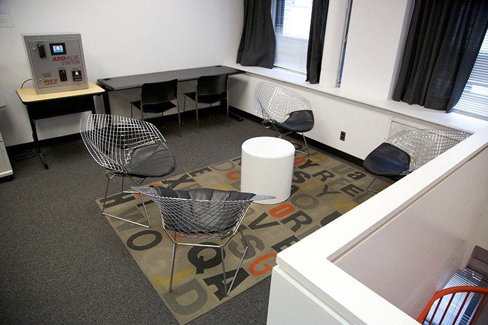
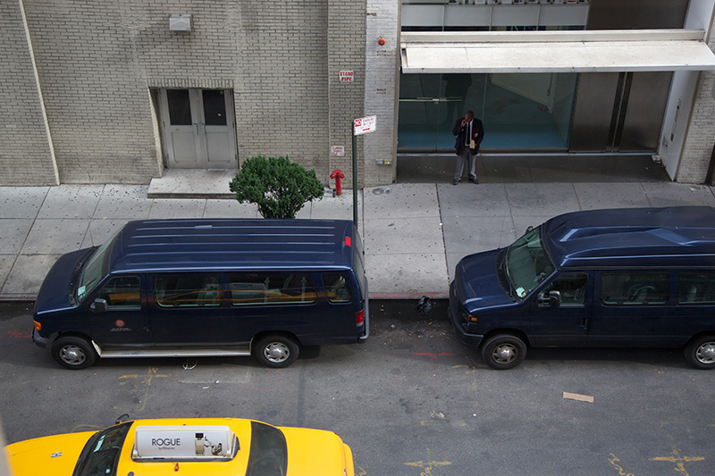

The quiet study space
provides desks to work at,
computer stations

for research,
scanners

, a
printer1

and a
lounge area

. One can see
13th street
through the blinds. Materials from the
stacks
can be reviewed here. The
circulation desk
is located at the bottom of the stairs.
1
There are three printers in the library. One in the quiet study area, a second by the research stations and a third colour photocopier by the periodicals.